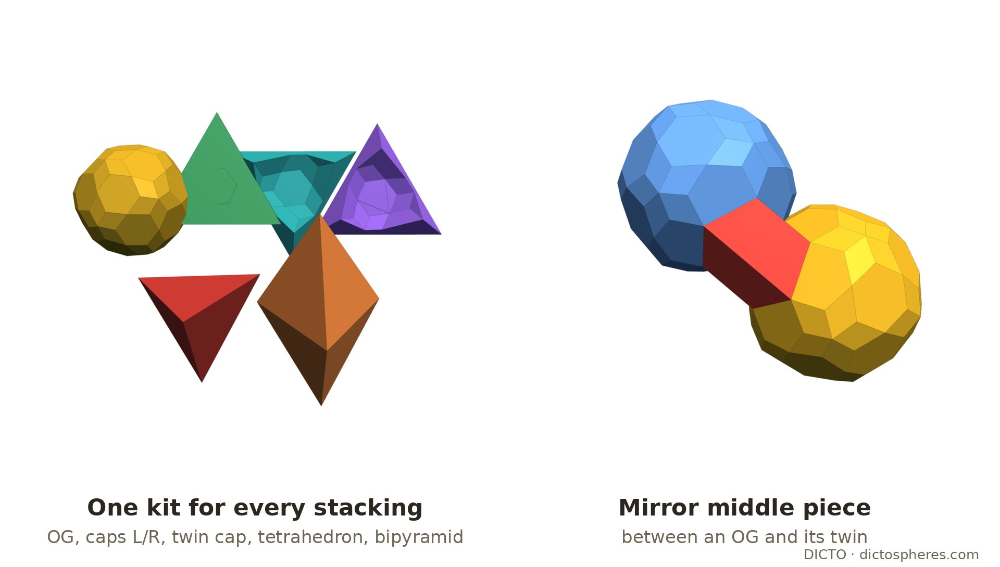
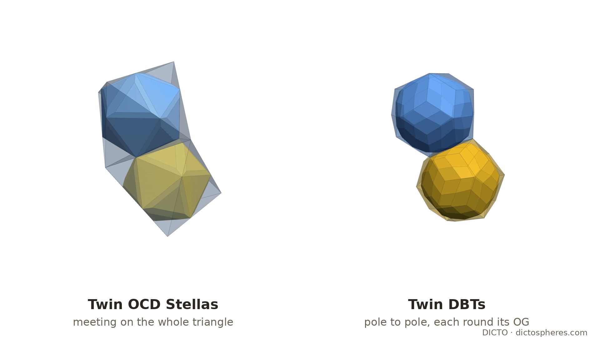

Twins at every layer: the Ogdoecontahedron, its OCD Stella and the DICTO Belted Triacontahedron in the gyrated tetrahedral–octahedral honeycomb, with one cell kit for every stacking
The octet truss (Fuller [1]) is the tetrahedral–octahedral honeycomb: regular octahedra and tetrahedra, two tetrahedra per octahedron, every octahedron face against a tetrahedron. Cut perpendicular to a three-fold axis it falls into layers one octahedron thick, each layer filling the slab between two parallel planes [2, 3]. Stacking the layers so that each is the mirror image of the one below gives the gyrated honeycomb, the hexagonal-close-packed (A B A B) counterpart of the face-centred-cubic (A B C) octet; any sequence of the two stackings tiles space as well, periodic or not [2, 4]. In the gyrated octet every layer boundary is a mirror plane: across it an octahedron meets an octahedron face to face, and a tetrahedron meets a tetrahedron, the pair forming a triangular bipyramid.
Frame (as in [5]). The OG at the origin, its octahedron |x| + |y| + |z| ≤ R with R = 2φ/3, volume (64 + 32√5)/81; tetrahedra (16 + 8√5)/81; a cell of the honeycomb (one octahedron and two tetrahedra) (32 + 16√5)/27. A twin layer is the plane x + y + z = R and its parallels. All coordinates are pairs of rationals a + b√5; corners are solved and checked exactly, volumes are exact sums of determinants.
The same hexagon. The OG's eight joint hexagons lie on the eight faces of its octahedron [5]. Reflected in the face x + y + z = R, the OG gives the OG of the octahedron on the other side, and the two meet in the same six corners: the regular joint hexagon, side² = 2/9 − 2√5/27, covering (7 − 3√5)/2 ≈ 14.59% of the face.
A true twin. The reflected OG is not a translate of the OG (as it is in the octet and in the OG's body-centred cubic packing), because the OG, a pyritohedral solid, has no mirror plane perpendicular to a three-fold axis. Exactly, the twin is the OG turned 60° about the joint three-fold axis, checked with the rational rotation that turns (1,0,0) to (2/3, 2/3, −1/3). This is the twin operation of the spinel law, a (111) twin of cubic crystals [6]. Round the hexagon each edge opens into a wedge between the twins: a face beside the hexagon and its mirror image make an angle whose cosine is exactly (7 − 36√5)/109, an opening of about 47.6°.
Cut each octahedron into the OG and 8 caps, one under each face, by the planes through the centre and the octahedron's edges; keep each tetrahedron whole. Each cap is (octahedron − OG)/8 = (277 − 79√5)/1539 ≈ 0.065205, and the OG is (−1000 + 1240√5)/1539 ≈ 1.151868, (1025 − 435√5)/76 ≈ 68.83% of its octahedron. No piece crosses a face of its cell, so the same kit fills the octet, the gyrated octet and any stacking of the layers, at the same density.
The caps are chiral. The OG's three-fold turn about a face's axis maps the 18 OG corners in that face's cone onto themselves, but none of the three mirrors through the axis does. So the caps come in two hands, 4 + 4 per OG: the faces (1,1,1), (1,−1,−1), (−1,1,−1), (−1,−1,1) carry one hand, the other four the other (inversion swaps them).
At a twin layer a cap meets its own mirror image, a cap of the other hand, across the part of the face outside the joint hexagon, (3√5 − 5)/2 ≈ 85.41% of the face. Fused, they make a mirror-symmetric twin cap of (554 − 158√5)/1539 ≈ 0.130410. The two tetrahedra that meet across the layer make a triangular bipyramid of (32 + 16√5)/81 ≈ 0.836754. A gyrated octet can therefore be built from the OG, the left and right caps, the twin cap and the bipyramid (and the tetrahedron, where layers stack as in the octet).
In the octet each octahedron edge joins two OGs whose five-fold corners face each other exactly (axes 180° apart, 0.3629 apart), and a middle piece spans them, with a thick Penrose rhombus between the stars [5, §3]. In the gyrated octet only the edges lying in a twin layer change: round them the cells run octahedron, tetrahedron | tetrahedron, octahedron, so the OG across the edge is the mirror twin, not the octet's partner. Middle pieces off the layer stay wholly on their own side (float check: no volume crosses the plane).
So the octet's Penrose-core kit becomes a gyrated kit by adding Mg at twin-layer edges. The octahedron and tetrahedron pieces that touch a twin layer then carry different notches on that face; those boundary shapes are not computed here.

The OCD Stella (DICTO DOI: 10.5281/zenodo.23430870), the stella cut of the OG's golden companion in its body-centred cubic packing, has its eight joint faces on the same eight planes. Turned into this frame by the cube axes of that packing (the turn carries the packing's OG exactly onto the OG here), it lies in the octahedron and fills (604 − 267√5)/9 ≈ 77.44% of it. Each joint face is an equilateral triangle of side² 8/3 − 8√5/9, (7 − 3√5) ≈ 29.18% of the octahedron face: exactly twice the OG's joint hexagon. Its mirror twin in a face is again the Stella turned 60°, and twin Stellas meet on the whole joint triangle.
The golden envelope (the rhombic triacontahedron of inradius 2/3 round the OG) does not fit as it is (float): its three-fold corners poke 0.0909 beyond the faces, and across a twin layer two envelopes would overlap by about 0.0175 per shared face. In the octet those corners become keys [5, §2]; at a twin layer they have nowhere to go.
The DICTO Jewel (first released with the Kaleidohedra app, DICTO DOI: 10.5281/zenodo.23223555) does not twin (float, ray-parity sampling): in its Stella–Jewel lattice a (111) twin through a Jewel layer leaves 4.0% of the sampled points near the layer uncovered and 4.2% covered twice; through a stella layer 5.1% and 5.9%; between layers 18–19%. The Jewel and the stella octangula are framed by cubes, and a cube mirrored across a body-diagonal plane is a different cube, whereas an octahedron mirrored in its face is simply the next octahedron of the gyrated octet.
Cut the golden envelope flat by the two octahedron faces x + y + z = ±R on one three-fold axis. DICTO named the result the DICTO Belted Triacontahedron (DBT); once cut it is a solid of its own, not a container.
In the gyrated octet. Every layer boundary is a twin plane, so each octahedron has its two pole faces on twin planes, exactly where the DBT is flat. Its mirror twin in a pole face is the DBT turned 60° (a true twin, as the OG). With a DBT in every octahedron, layer by translation and the neighbouring layers as mirror images, no DBT overlaps another: exact separating planes for all 56 neighbours checked (18 in the same layer, 19 above, 19 below). Twin DBTs meet flat, pole triangle to pole triangle, and the six keys round the belt reach into the tetrahedra of their own layer as in the octet. The DBTs fill (493 − 219√5)/6 ≈ 55.02% of space (82.53% of each octahedron).

The gyrated tetrahedral–octahedral honeycomb, its hcp stacking and the non-periodic stackings of the same layers are classical [2, 3, 4]; binary hard tetrahedra and octahedra self-assemble into the octet arrangement [7]. Twinning by a (111) mirror, equivalently a 60° (or 180°) turn about [111] for a centrosymmetric crystal, is the spinel law [6]. Kabai's golden octet truss [8] is a module of one tetrahedral and one octahedral part of a golden rhombohedron, laid in planar and icosahedral lattices; his 54-faced space-filler [9] removes eight corners of a rhombic triacontahedron, each half an oblate golden rhombohedron, at the corners of a cube, for a body-centred cubic packing: a different cut and a different packing from the DBT, which removes two opposite corners, each one sixth of an oblate golden rhombohedron, and stacks as twins.
Not found in our reference library (full text, searched 20 October 2026) or web searches the same day: icosahedral solids placed in the octahedra of the gyrated octet; the OG or the OCD Stella twinned across its octahedron faces; a cell kit common to the octet and the gyrated octet; the twin cap, the mirror middle piece, or the DBT as a solid. What is claimed is these results and their exact values; the honeycombs, the stackings and the twin law are not ours.
Open. The boundary pieces of the Penrose-core kit at twin layers; a fill of the DBT gyrated octet's remaining space (its tetrahedra less the six keys of each neighbour); the pieces made selectable on a gyrated-octet lattice in the apps (DICTO, planned).
Exact scripts (ℚ(√5)): check.py (the shared hexagon, mirror ≠ translate, the wedge), twin.py (the 60° twin), kit.py and hand.py (caps, chirality), gyr_exact.py (hexagon share, twin cap, bipyramid, Mg, the DBT in the gyrated octet), stella_twin_exact.py (the OCD Stella), dbt_exact.py (the DBT). Float: gyr_cores.py (middle pieces at a twin layer), belted.py, jewel_twin.py and jewel_twin_planes.py (the Jewel). Logs: dbt-exact.log, gyr-exact.log, stella-twin.log, gyr-cores.log. Figures: gyr_page.py (meshes, float copies of the exact solids), shoot.mjs, make_figs.py.